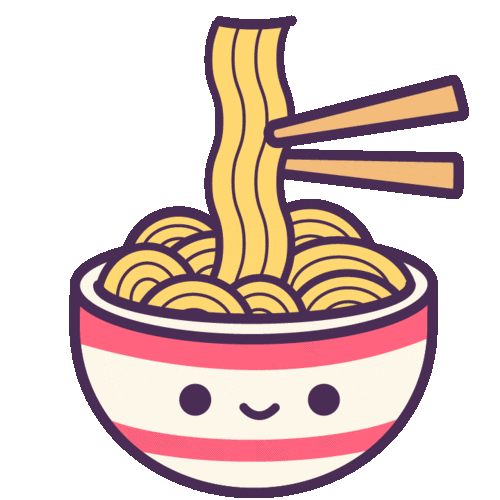

I like to cook and eat, maybe because my mother is so diligent in cooking various
dishes at home so it has given me a boost of interest in this matter.
For me, eating can bring joy and happiness to oneself.

Figure 1 - Karipap that my mother made Figure 2 - Kuih Gulung that my mother made Figure 3 - Pizza, my favourite Figure 4 - Bihun Sup that I made myself